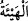

Nitekim bu konunun tafsîlâtı A’râf ve Hûd sûrelerinde geçmişti.
155. Salih: “İşte (mucize) bu dişi devedir; onun bir su içme hakkı vardır, belli bir
günün içme hakkı da sizindir.” dedi.
“Salih: “İşte (mucize) bu dişi devedir;” Sizin talep ettiğiniz dişi deve budur. “onun
bir su içme hakkı vardır,” yâni “ sulamadan ve azıktan pay demek olduğu
gibi “ de su içmekten nasîp/pay demektir.
“belli bir günün içme hakkı da sizindir.” dedi.” Su bir gün o devenin, iki gün de
sizindir. Siz kendi içme hakkınızla yetinin; o hayvanın hakkına karışmayın, müdâhele
etmeyin.
Burada anlaşarak menfaat taksiminin câiz oluşuna delil vardır. Çünkü “onun bir su
içme hakkı vardır, belli bir günün içme hakkı da sizindir.” âyetinde belirtilen husus
muhâyee türündendir.
Mühâyee, sözlükte ‘iyi durumda olmak, hazır hale gelmek’ anlamındaki “
kelimesinin müfâale babındaki hâlidir (birden fazla kişinin belirli bir durum üzerinde
uzlaşmaları demektir). “ karşılıklı anlaşmak/uzlaşmak demektir. Bu ise bir hususta
anlaşmaları ve razılaşmalarıdır. Esası ise ortaklardan her birinin bir duruma razı olup
onu seçmesidir.
Mühâyee şer’an nöbetleşe ve sıra ile menfaatleri paylaşmaktır. İki ortak müşterek bir
evi paylaşsalar, biri evin bir kısmında, diğeri başka bir kısmında, biri üst katında diğeri
alt katında oturmaya anlaşsalar; veya o evde biri bir gün ya da bir ay, diğeri bir gün ya
da bir ay oturmaya anlaşsalar; yahut iki evden biri şunda, öbürü diğerinde oturma
konusunda mühâyee yapsalar ve uzlaşsalar; veya bir kölenin hizmeti konusunda birine
bir gün diğerine bir gün hizmet etmesi; yahut iki kölenin hizmeti konusunda kölenin
birinin birisine, diğerinin diğerine hizmet etmesi konusunda anlaşsalar, işte zikredilen
bu durumlarda mühâyee (menfaat akdi) insanların ihtiyacına binaen istihsan yolu ile
icmâ ile sahihtir/câizdir. Çünkü bu gibi durumlarda aynı anda faydalanma mümkün
değildir. Bu yüzden bu muâmele taksîme benzetilmiştir. Kıyâsen sahih olmaması gerekir.
Çünkü menfaatlerin mubâdelesi, kendi cinsi ile olur. Ancak kıyas, kitab ile, yâni
zikredilen âyet ile ve sünnet ile terk edilmiştir.
Sünnetten delil ise Rasûlullah (s.a.)’in Bedir gazvesinde her deveyi üç kişi arasında
taksim etmesi ve nöbetleşe ondan faydalanmalarına dâir rivâyettir.[21]
Mühâyeenin câiz olduğu hususunda ümmetin icmâsı vardır.
Fethur’Rahmân’da der ki: “Mühâyeenin hükmü ihtilaflıdır. Ebû Hanîfe (r.h.), taleb
eden kimse inatçı olmadığı sürece imtinâ edenin mühâyeeye zorlanacağı görüşündedir.
Üç imam ise mühâyeenin karşılıklı rızâ ile olacağı ve mühâyeede zorlama olmayacağı